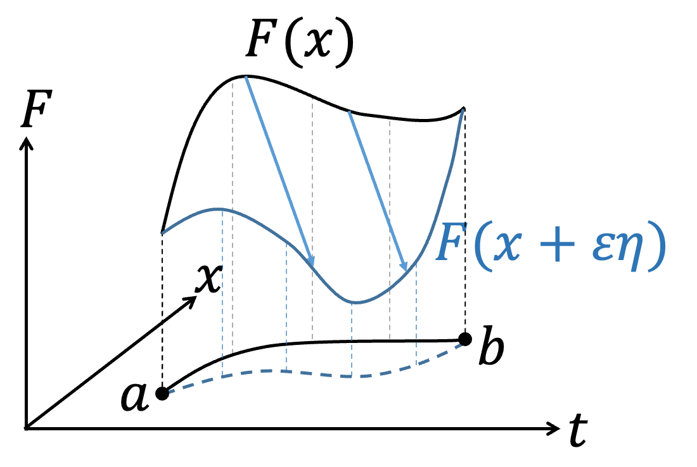
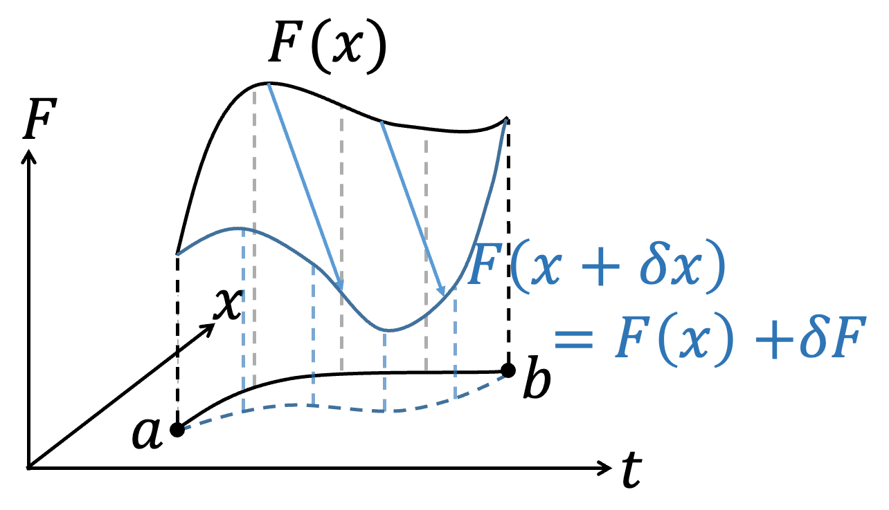

Classical Principle of Least Action
\(\to\)Chinese Version
\(\to\)Lecture Note-Principle of Least Action(2019)
\(\to\)Lecture Note-Principle of Least Action(2018)
Update 2024.11.28：New--Conservation Laws Derivation in Conventional Textbooks
Update 2024.11.18：New--Ostrogradsky Instability and Higher-Order Derivatives
- Introduction
- Elementary Variational Method
- Simplified Variation Notation
- Non-uniqueness of the Lagrangian
- Point Transformation, Form Invariant, and the Principle of Relativity
- Lagrangian in Momentum Space
- Classical Noether's Theorem
- Conservation Laws Derivation in Conventional Textbooks
- Maximal Symmetry Action
- Ostrogradsky Instability and Higher-Order Derivatives
- Initial position and time \((q, t_i)\) and final position and time \((q_f, t_f)\)
- Initial position and time \((q_i, t_i)\) and initial velocity \( \dot{q}_i \)
- If \(L\) depends on \(n\)-th derivatives, the EoM becomes a \(2n\)-th order differential equation, requiring initial conditions up to \((2n-1)\)-th derivatives. \(2n-1 \geq n\), with equality holding when \(n=1\). Therefore, to ensure that the initial conditions do not exceed the order of derivatives that \(L\) depends on, \(n\) can only be \(1\).
- For \(n > 1\), the Hamiltonian \(H\) introduces odd-power terms, causing \(H\) to lack a lower bound.
In the framework of modern physics development, starting from the action \( S \), physicists write down the action based on experiments, physical phenomena, constraints, etc. After writing down the action, they perform a variation \( \delta S \) (variation) and, under the condition of the principle of least action \( \delta S = 0 \), obtain the equations of motion that the physical system adheres to. Subsequently, physical quantities that satisfy the equations of motion are determined according to different physical systems. In classical mechanics, d'Alembert utilized the principle of virtual work to derive $$ {d \over dt}{\partial L \over \partial \dot{x}_i}-{\partial L \over \partial x_i}=0 $$ Later, Hamilton further clarified that the above equation satisfies $$ \int_a^b L(x_1,...,x_n,\dot{x_1},...,\dot{x_n},t)dt $$ which is the necessary result of applying the variational method to obtain the extremum \( \delta S = 0 \). In physics, the variational method is often used in the early development of new theories. Since physicists do not initially know the correct equations of motion, they guess the possible form of the action based on experimental results and physical experience. They then use the variational method to derive the equations of motion that describe the Lagrangian. Once the equations of motion are obtained, the variational method is no longer needed for subsequent problem-solving. For example, $$ \int_a^b L(x,\dot{x},t)dt $$ When applying variation, the Euler-Lagrange equation is obtained: $$ {d \over dt}{\partial L \over \partial \dot{x}}-{\partial L \over \partial x}=0 $$ Subsequent theoretical mechanics courses only need to solve the Euler-Lagrange equation. Thus, the variational method is not commonly covered in detail in textbooks related to mathematics, as it is only needed in the early stages of developing a theory. Therefore, the variational method will be briefly introduced here in a non-mathematically rigorous manner.
In the context of modern physics development, consider a functional integral problem: $$ S[F(x, \dot{x}, t)] = \int_a^b F(x, \dot{x}, t) \, dt $$ where \( x = x(t) \) and \( \dot{x} = \frac{dx}{dt} \). If we change the trajectory \( x(t) \) while keeping \( a \) and \( b \) fixed, it affects the integral \( S \). We want to find the form of \( x(t) \) or the conditions that \( F(x, \dot{x}, t) \) must satisfy for \( S \) to have an extremum (whether maximum or minimum). According to the concept of calculus, if \( f(x) \) is at an extremum \( x_0 \), a small change \( x_0 + \varepsilon \) will not change \( f(x) \), i.e., \( df = 0 \). Similarly, for \( S \) to be at an extremum, a small change in \( x(t) \) results in \( \delta S = 0 \). We can represent the integral problem graphically; different functions \( x(t) \) represent different paths connecting points \( a \) and \( b \).
 |  |
{kind=link}
In the previous section, we introduced the basic concept of the variational method, but it required introducing an arbitrary function \(\eta(t)\), which made the process somewhat cumbersome and less conducive to further operations. In this section, we will demonstrate the variational method using the same concept but with a more abstract approach and similar mathematical techniques. This approach is somewhat analogous to treating the variational operation similarly to differentiation.
 |  |
|
Advanced: Thm. 1: Interchangeability of Differentiation and Variation If differentiation and variation are applied to different objects, such as differentiation with respect to \(t\), \( \frac{d}{dt} \) and variation with respect to \(x\), \left(\frac{\partial q}{\partial s}\right) d\dot{s} \(\delta x\), then \( \frac{d}{dt} \) and \( \delta \) can be interchanged. $$\delta \dot{f} = \dot{f}(x + \delta x) - \dot{f}(x)$$ $$= \frac{d}{dt} \left( f(x + \delta x) - f(x) \right) = \frac{d}{dt} \delta f$$ |
| Advanced: Thm. 2: Chain Rule for Variation $$\delta (FG) = \frac{\partial (FG)}{\partial x} \delta x + \frac{\partial (FG)}{\partial \dot{x}} \delta \dot{x}$$ $$= \left( \frac{\partial F}{\partial x} G + F \frac{\partial G}{\partial x} \right) \delta x + \left( \frac{\partial F}{\partial \dot{x}} G + F \frac{\partial G}{\partial \dot{x}} \right) \delta \dot{x}$$ $$= \left( \frac{\partial F}{\partial x} \delta x + \frac{\partial F}{\partial \dot{x}} \delta \dot{x} \right) G + F \left( \frac{\partial G}{\partial x} \delta x + \frac{\partial G}{\partial \dot{x}} \delta \dot{x} \right)$$ $$= \delta F \cdot G + F \cdot \delta G$$ |
| Advanced: Thm. 3: Multiplying and Dividing Function \(F\) by Another Function \(G\) Does Not Affect the Variation $$\delta F = \delta \left( F \cdot \frac{G}{G} \right) = \delta \left( F \cdot G \cdot G^{-1} \right)$$ $$= \delta F \cdot G \cdot G^{-1} + F \cdot \delta G \cdot G^{-1} + F \cdot G \cdot \delta (G^{-1})$$ $$= \delta F + F \cdot \delta G \cdot G^{-1} + F \cdot G \cdot \left( -\frac{\delta G}{G^2} \right)$$ $$= \delta F$$ |
In the theoretical mechanics course, it is taught that adding a total time derivative term \(f=f(q,t)\) to the Lagrangian, i.e., \(L→L+{df\over dt}\), does not change the EoM. This can be explained in two parts. The first is the simplest, from the variation of the endpoints:
$$\delta S=\delta \int _a^b (L+{df\over dt})dt$$
$$=\delta \left[\int _a^b Ldt+\int _a^b {df\over dt} dt \right]$$
$$=\delta \left[\int _a^b Ldt+f(b)-f(a)\right]$$
$$=\delta \int _a^b Ldt+\delta f(b)-\delta f(a)$$
But since the endpoints are not varied, \(\delta f(b)=\delta f(a)=0\), naturally,
$$\delta \int _a^b \left(L+{df\over dt}\right)dt=\delta \int _a^b Ldt=0$$
The second approach is to directly expand and observe whether \(L+\dot{f}\) satisfies
\({d\over dt} {\partial \over\partial \dot{x}}\left( L+\dot{f} \right) -{\partial \over\partial x}\left( L+\dot{f} \right)=0\).
$${d\over dt} {\partial \over\partial \dot{x}}\left( L+\dot{f} \right) -{\partial \over\partial x}\left( L+\dot{f} \right)={d\over dt} {\partial L\over\partial \dot{x}} -{\partial L\over\partial x}+\color{red}{{d\over dt} {\partial \dot{f} \over\partial \dot{x}} -{\partial \dot{f} \over\partial x}}$$
The red term allows us to observe two things, because \(f=f(x,t)\):
$$df={\partial f\over\partial x} dx+{\partial f\over\partial \dot{x}} d\dot{x} +{\partial f\over\partial t} dt$$
$$\to \dot{f} ={\partial \over\partial x} \dot{x} +{\partial f\over\partial \dot{x}} \ddot{x} +{\partial f\over\partial t}$$
So,
$${ \partial \dot{f} \over\partial \dot{x}} ={\partial f\over\partial x}\to dot\ cancellation$$
$${\partial \over\partial x} \dot{f}={\partial \over\partial x} \left({\partial \over\partial x} \dot{x} +{\partial f\over\partial \dot{x}} \ddot{x} +{\partial f\over\partial t}\right)$$
$$=\left({\partial \over\partial x} {\partial f\over\partial x}\right) \dot{x} +\left({\partial \over\partial x} {\partial f\over\partial \dot{x}} \right) \ddot{x} +\left({\partial \over\partial x} {\partial f\over\partial t}\right)$$
$$={d\over dt} \left({\partial f\over\partial x}\right)\to{d\over dt},{\partial \over\partial x} commute $$
We get the red term to be zero:
$$\color{red}{{d\over dt} {\partial \dot{f} \over\partial \dot{x} }-{\partial \dot{f} \over\partial x}={d\over dt} {\partial f\over\partial x}-{d\over dt} {\partial f\over\partial x}=0}$$
Thus,
$${d\over dt} {\partial \over\partial \dot{x}}\left( L+\dot{f} \right) -{\partial \over\partial x}\left( L+\dot{f} \right)={d\over dt} {\partial L\over\partial \dot{x}} -{\partial L\over\partial x}=0$$
Adding \(\dot{f}\) does not change the EoM.
When studying physics, the most fundamental physical law is the Principle of Relativity. One way to describe it is: for all inertial frames of reference (at least in this discussion, we are not considering General Relativity), the same physical laws apply. In other words, all inertial observers use the same set of physical laws and have the same physical equations, which means they are "form invariant." In Newtonian mechanics, for example, \( F = ma \) remains the same in another inertial frame as \( \bar{F} = m\bar{a} \). My teacher, Professor Ding-Yi Zhou, often used a vivid analogy: if the laws of physics did not adhere to the Principle of Relativity, there would be infinitely many physical laws corresponding to infinitely many inertial frames, making devices like mobile phones impossible to use. For instance, if you boarded an airplane, the physical laws governing the devices made on the ground would no longer apply, making those devices inoperative. It can be said that the Principle of Relativity is one of the most fundamental assumptions in the study of physics. Since Newtonian mechanics is form invariant, we should also discuss whether the Euler-Lagrange equation is also form invariant under different coordinate systems.
Here, we will first discuss the simplest example, called Point Transformation. Suppose that the physics studied in the \( q \) inertial frame satisfies:
$$L = L(\dot{q}, q, t)$$
$$\frac{d}{dt} \frac{\partial L}{\partial \dot{q}} - \frac{\partial L}{\partial q} = 0$$
Another observer, who uses the \( s \) coordinate system, notes that there is an invertible functional relationship between the two:
$$s = s(q, t) \leftrightarrow q = q(s, t)$$
$$dq = \frac{\partial q}{\partial s} ds + \frac{\partial q}{\partial t} dt$$
$$\rightarrow \dot{q} = \frac{\partial q}{\partial s} \dot{s} + \frac{\partial q}{\partial t}$$
$$\rightarrow d\dot{q} = d\left(\frac{\partial q}{\partial s}\right) \dot{s} + \left(\frac{\partial q}{\partial s}\right)d\dot{s} + d\left(\frac{\partial q}{\partial t}\right)$$
$$=\left(\frac{\partial q}{\partial s}\right) d\dot{s} + \dot{s}\left(\frac{\partial^2 q}{\partial s^2} ds + \frac{\partial^2 q}{\partial t \partial s} dt\right) + \left(\frac{\partial^2 q}{\partial s \partial t} ds + \frac{\partial^2 q}{\partial t^2} dt\right)$$
$$=\frac{\partial q}{\partial s} d\dot{s} + \left[\dot{s} \frac{\partial^2 q}{\partial s^2} + \frac{\partial^2 q}{\partial s \partial t}\right]ds + \left[\frac{\partial^2 q}{\partial t \partial s} + \frac{\partial^2 q}{\partial t^2}\right]dt$$
$$\equiv \frac{\partial \dot{q}}{\partial \dot{s}} d\dot{s} + \frac{\partial \dot{q}}{\partial s} ds + \frac{\partial \dot{q}}{\partial t} dt$$
$$\rightarrow \dot{q} = \dot{q}(\dot{s}, s, t)$$
Let's first look at the Lagrangian \( L \):
$$dL = \frac{\partial L}{\partial \dot{q}} d\dot{q} + \frac{\partial L}{\partial q} dq + \frac{\partial L}{\partial t} dt$$
$$=\frac{\partial L}{\partial \dot{q}} \left(\frac{\partial \dot{q}}{\partial \dot{s}} d\dot{s} + \frac{\partial \dot{q}}{\partial s} ds + \frac{\partial \dot{q}}{\partial t} dt\right) + \frac{\partial L}{\partial q} \left(\frac{\partial q}{\partial s} ds + \frac{\partial q}{\partial t} dt\right) + \frac{\partial L}{\partial t} dt$$
$$=\left(\frac{\partial L}{\partial \dot{q}} \frac{\partial \dot{q}}{\partial \dot{s}} d\dot{s} + \frac{\partial L}{\partial \dot{q}} \frac{\partial \dot{q}}{\partial s} ds + \frac{\partial L}{\partial \dot{q}} \frac{\partial \dot{q}}{\partial t} dt\right) + \left(\frac{\partial L}{\partial q} \frac{\partial q}{\partial s} ds + \frac{\partial L}{\partial q} \frac{\partial q}{\partial t} dt\right) + \frac{\partial L}{\partial t} dt$$
$$=\frac{\partial L}{\partial \dot{q}} \frac{\partial \dot{q}}{\partial \dot{s}} d\dot{s} + \left(\frac{\partial L}{\partial \dot{q}} \frac{\partial \dot{q}}{\partial s} + \frac{\partial L}{\partial q} \frac{\partial q}{\partial s}\right)ds + \left(\frac{\partial L}{\partial \dot{q}} \frac{\partial \dot{q}}{\partial t} + \frac{\partial L}{\partial q} \frac{\partial q}{\partial t}\right)dt + \frac{\partial L}{\partial t} dt$$
$$\equiv \frac{\partial L}{\partial \dot{s}} d\dot{s} + \frac{\partial L}{\partial s} ds + \frac{\partial L}{\partial t} dt$$
$$\rightarrow L = L(\dot{s}, s, t)$$
Confirming that after the Point Transformation, the Lagrangian \( L \) in the \( s \) coordinates is still just a function of \( \dot{s}, s, t \). Here, we can directly apply the variational process to show that the Lagrangian \( L(\dot{s}, s, t) \) satisfies:
$$\frac{d}{dt} \frac{\partial L}{\partial \dot{s}} - \frac{\partial L}{\partial s} = 0$$
Of course, we can also use direct mathematical calculations. Starting from the original Euler-Lagrange equation:
$$\frac{d}{dt} \frac{\partial L}{\partial \dot{q}} - \frac{\partial L}{\partial q} = 0 \rightarrow \frac{d}{dt} \left(\frac{\partial L}{\partial \dot{s}} \color{red}{\frac{\partial \dot{s}}{\partial \dot{q}}}\right) - \left(\frac{\partial L}{\partial \dot{s}} \frac{\partial \dot{s}}{\partial q} + \frac{\partial L}{\partial s} \frac{\partial s}{\partial q}\right) = 0$$
In red, using dot cancellation \( \color{red}{\frac{\partial \dot{s}}{\partial \dot{q}} = \frac{\partial s}{\partial q}} \):
$$\rightarrow \frac{d}{dt} \left(\frac{\partial L}{\partial \dot{s}} \color{red}{\frac{\partial s}{\partial q}}\right) - \left(\frac{\partial L}{\partial \dot{s}} \frac{\partial \dot{s}}{\partial q} + \frac{\partial L}{\partial s} \frac{\partial s}{\partial q}\right) = 0$$
$$\rightarrow \frac{d}{dt} \left(\frac{\partial L}{\partial \dot{s}}\right) \frac{\partial s}{\partial q} + \frac{\partial L}{\partial \dot{s}} \frac{\partial \dot{s}}{\partial q} - \frac{\partial L}{\partial \dot{s}} \frac{\partial \dot{s}}{\partial q} - \frac{\partial L}{\partial s} \frac{\partial s}{\partial q} = 0$$
Since \( \frac{d}{dt} \left(\frac{\partial s}{\partial q}\right) = \frac{\partial \dot{s}}{\partial q} \) (only if \( s = s(q, t) \)):
$$\rightarrow \frac{d}{dt} \left(\frac{\partial L}{\partial \dot{s}}\right) \frac{\partial s}{\partial q} + \frac{\partial L}{\partial \dot{s}} \frac{\partial \dot{s}}{\partial q} - \frac{\partial L}{\partial \dot{s}} \frac{\partial \dot{s}}{\partial q} - \frac{\partial L}{\partial s} \frac{\partial s}{\partial q} = 0$$
$$\rightarrow \left[\frac{d}{dt} \left(\frac{\partial L}{\partial \dot{s}}\right) - \frac{\partial L}{\partial s}\right] \frac{\partial s}{\partial q} = 0$$
Since \( \frac{\partial s}{\partial q} \) is invertible and arbitrary:
$$\frac{d}{dt} \left(\frac{\partial L}{\partial \dot{s}}\right) - \frac{\partial L}{\partial s} = 0$$
In the \( s \) coordinates, it still satisfies the Euler-Lagrange equation. Here, it can be noted that \( s = s(q, t) \) is not necessarily an inertial frame, yet it still satisfies the Euler-Lagrange equation, demonstrating the power of the Euler-Lagrange equation.
The Lagrangian equation can be described not only in \((q,\dot{q} ,t)\) space but also in momentum space \((p,\dot{p} ,t)\). The transformation is as follows: $$ p={\partial L \over \partial \dot{q}} $$ $$\dot{p} ={d\over dt} {\partial L\over\partial \dot{q}}={\partial L\over\partial q}$$ \(p\) is the generalized momentum. Using \(L=L(q,\dot{q} ,t)\), $$dL=\dot{p} dq+pd\dot{q} +{\partial L\over\partial t} dt$$ $$=d(\dot{p} q)-qd\dot{p} +d(p\dot{q} )-\dot{q} dp+{\partial L\over\partial t} dt$$ $$=\color{red}{d(\dot{p} q+p\dot{q} )}-qd\dot{p} -\dot{q} dp+{\partial L\over\partial t} dt$$ Moving the red term to the other side: $$d \left(L\color{red}{-\dot{p} q-p\dot{q}} \right)=-qd\dot{p} -\dot{q} dp+{\partial L\over\partial t} dt$$ Define a new Lagrangian \(\bar{L}\): $$\bar{L} \equiv L-\dot{p} q-p\dot{q} =L-{d\over dt} (pq)$$ We get \(d\bar{L}\): $$ d\bar{L}=-qd\dot{p} -\dot{q} dp+{\partial L\over\partial t} dt$$ Comparing the left and right sides, we get: $${\partial \bar{L}\over\partial \dot{p} }=-q$$ $${\partial \bar{L}\over\partial p}=-\dot{q}$$ $$\to {d\over dt} {\partial \bar{L}\over\partial \dot{p}}={\partial \bar{L}\over\partial p}$$ This is the EoM in momentum space. It is noteworthy that the form is invariant.
Classical Noether's Theorem
Noether's theorem, as an important theorem in classical mechanics, is also the key reason why Lagrangian and Hamiltonian mechanics transcend Newtonian mechanics. The statement of Noether's theorem is that when a system satisfies the EoM or the principle of least action, if we apply a variation \(\delta \alpha\) to the Action S and still have \(\delta S=0\), Noether's theorem indicates that there is a corresponding conserved quantity. Here we discuss simultaneous variations in time \(t\) and the physical trajectory \(q\):
$$q \to \bar{q} = q+\delta q$$
$$t \to \bar{t} =t+\delta t$$
However, it is worth noting that the trajectory \(q\), as a function of time \(t\), will be affected not only by its own variation but also by the change in time. Define \(\Delta q\) to represent the total effect:
$$\Delta q\equiv \bar{q} (\bar{t} )-q(t)$$
$$=\bar{q} (\bar{t} )-q(\bar{t} )+q(\bar{t} )-q(t)$$
$$=\delta q+\dot{q} \delta t$$
Consider the difference before and after the variation:
$$\delta S=\delta \int L dt=\int \delta L dt+\int L d\delta t$$
The first term can be expanded as:
$$\delta L=L \left(\bar{q} (\bar{t} ),\dot{\bar{q}}(\bar{t} ),\bar{t} \right)-L\left(q(t),\dot{q} (t),t\right)$$
$$=L \left(\bar{q} (\bar{t} ),\dot{\bar{q}}(\bar{t} ),\bar{t} \right)-L\left(q(\bar{t} ),\dot{q} (\bar{t} ),\bar{t} \right)+L\left(q(\bar{t} ),\dot{q} (\bar{t} ),\bar{t} \right)-L\left(q(t),\dot{q} (t),t\right)$$
$$={\partial L\over\partial q} \delta q+{\partial L\over \partial \dot{q} } \delta \dot{q} +{dL\over dt} \delta t$$
$$={\partial L\over\partial q} \delta q-\left({d\over dt} {\partial L\over \partial \dot{q} }\right) \delta q+{d\over dt} \left({\partial L\over \partial \dot{q} } \delta q\right)+{dL\over dt} \delta t$$
$$=\left[{\partial L\over\partial q} -{d\over dt} {\partial L\over \partial \dot{q} }\right]\delta q+{d\over dt} \left({\partial L\over \partial \dot{q} } \delta q\right)+{dL\over dt} \delta t$$
Since the Lagrangian satisfies the EoM:
$${\partial L\over\partial q} -{d\over dt} {\partial L\over \partial \dot{q} } =0 $$
The first term simplifies to:
$$\delta L={d\over dt} \left({\partial L\over \partial \dot{q} } \delta q\right)+{dL\over dt} \delta t$$
The second term can be rewritten as:
$$\int L d\delta t=\int L {d\delta t\over dt} dt$$
Combining the two terms:
$$\delta S=\int \left[{d\over dt} \left({\partial L\over \partial \dot{q} } \delta q\right)+{dL\over dt} \delta t\right] dt+\int {L d\delta t\over dt} dt$$
$$=\int {d\over dt} \left[{\partial L\over \partial \dot{q} } \delta q+L\delta t\right] dt$$
However, since \(\delta q\) is just the variation of the trajectory itself, the total variation \(\Delta q\) must be considered. Using
$$\delta q=\Delta q-\dot{q} \delta t$$
Substitute into the equation:
$$\delta S=\int {d\over dt} \left[{\partial L\over \partial \dot{q} } \left(\Delta q-\delta t \right)+L\delta t\right] dt$$
$$=\int {d\over dt} \left[{\partial L\over \partial \dot{q} } \Delta q-\left({\partial L\over \partial \dot{q} } \dot{q} -L\right)\delta t\right] dt$$
If the variation leaves the action unchanged, i.e., \(\delta S=0\), then:
$$ {d\over dt} \left[{\partial L\over \partial \dot{q} } \Delta q\right]=0 \to {\partial L\over \partial \dot{q} } \Delta q =const.$$
$$ {d\over dt} \left[ \left({\partial L\over \partial \dot{q} } \dot{q} -L\right)\delta t\right]=0 \to \left({\partial L\over \partial \dot{q} } \dot{q} -L\right)\delta t = const.$$
The conserved quantity corresponding to the invariance under trajectory \(q\) variation is:
$${\partial L\over \partial \dot{q} } =p$$
This is momentum conservation.
The conserved quantity corresponding to the invariance under time \(t\) variation is:
$$H={\partial L\over \partial \dot{q} } \dot{q} -L$$
This is energy conservation.
Momentum Conservation
For momentum conservation, we can directly start from the EoM: \[ \frac{\partial L}{\partial q} - \frac{d}{dt} \frac{\partial L}{\partial \dot{q}} = 0 \implies \frac{d}{dt} \frac{\partial L}{\partial \dot{q}} = \frac{\partial L}{\partial q}. \] If \(L\) is not an explicit function of the trajectory \(q\), then \(\frac{\partial L}{\partial q} = 0\), which implies: \[ \frac{d}{dt} \frac{\partial L}{\partial \dot{q}} = 0. \] This means the momentum: \[ p = \frac{\partial L}{\partial \dot{q}} = \text{constant}. \] Another implication of \(\frac{\partial L}{\partial q} = 0\) is that when \(q \to q + \delta q\) (with \(\dot{q}\) unchanged), we have: \[ \delta L = \frac{\partial L}{\partial q} \delta q = 0. \]
Energy Conservation and Hamiltonian
Next, we discuss the Hamiltonian \(H\): \[ \frac{dL}{dt} = \frac{\partial L}{\partial \dot{q}} \frac{d\dot{q}}{dt} + \frac{\partial L}{\partial q} \frac{dq}{dt} + \frac{\partial L}{\partial t}. \] Rearranging and simplifying, we get: \[ \frac{\partial L}{\partial t} = \frac{dL}{dt} - \frac{\partial L}{\partial \dot{q}} \frac{d\dot{q}}{dt} - \frac{\partial L}{\partial q} \dot{q}. \] \[ = \frac{dL}{dt} - \frac{d}{dt} \left( \frac{\partial L}{\partial \dot{q}} \dot{q} \right) + \frac{d}{dt} \left( \frac{\partial L}{\partial \dot{q}} \right) \dot{q} - \frac{\partial L}{\partial q} \dot{q}. \] \[ = -\frac{d}{dt} \left( \frac{\partial L}{\partial \dot{q}} \dot{q} - L \right) + \left( \frac{d}{dt} \frac{\partial L}{\partial \dot{q}} - \frac{\partial L}{\partial q} \right) \dot{q}. \] The second term corresponds to \(EoM = 0\), so: \[ \frac{\partial L}{\partial t} = -\frac{d}{dt} \left( \frac{\partial L}{\partial \dot{q}} \dot{q} - L \right). \] If \(L\) is not an explicit function of time \(t\), then \(\frac{\partial L}{\partial t} = 0\), which implies: \[ \frac{d}{dt} \left( \frac{\partial L}{\partial \dot{q}} \dot{q} - L \right) = 0. \] The energy: \[ E = \frac{\partial L}{\partial \dot{q}} \dot{q} - L = \text{constant}. \] Another implication of \(\frac{\partial L}{\partial t} = 0\) is that when \(t \to t + \delta t\) (with \(q, \dot{q}\) unchanged), we have: \[ \delta L = \frac{\partial L}{\partial t} \delta t = 0. \]
Global and Local Transformations
In the previous section, we discussed the symmetry of the action \(S\), i.e., \(\delta S = 0\). In this section, we consider \(L\) being independent of \(q\) or \(t\), i.e., \(\delta L = 0\). The difference between the two is reflected in: \[ \delta S = \delta \left( \int L \, dt \right) = \int \delta L \, dt + \int L \delta dt, \] where the second term introduces a difference. From the previous derivation: \[ \int L \delta dt = \int L \frac{d \delta t}{dt} dt. \] If \(\frac{d \delta t}{dt} = 0\), then \(\delta L = 0 \iff \delta S = 0\). A more detailed comparison is shown in the following table:
| \[\delta L = 0\] | \[\delta S = 0\] |
| \[\frac{\partial L}{\partial q} = \frac{d}{dt} \frac{\partial L}{\partial \dot{q}} = 0\] | \[\frac{d}{dt} \left( \frac{\partial L}{\partial \dot{q}} \Delta q \right) = 0\] |
| \[ \frac{\partial L}{\partial t} = -\frac{d}{dt} \left( \frac{\partial L}{\partial \dot{q}} \dot{q} - L \right)=0 \] | \[\frac{d}{dt} \left[ \left( \frac{\partial L}{\partial \dot{q}} \dot{q} - L \right) \delta t \right] = 0\] |
When the variation \(\Delta q\) is not a function of time (i.e., \(\frac{d}{dt} \Delta q = 0\)), the results of \(\delta L = 0\) and \(\delta S = 0\) are identical. Similarly, when \(\frac{d}{dt} \delta t = 0\), the conservation laws from both approaches are equivalent.
This introduces the concept of global transformations and local transformations. A global transformation assumes the variation is time-independent, meaning the changes at all time points are fixed. A local transformation allows the variation to be time-dependent, providing greater freedom in changes at each time point. Clearly, global transformations are a special case of local transformations. Discussing \(\delta L = 0\) quickly leads to conserved quantities for global transformations, while local transformations pave the way for new directions, such as gauge theory, which we may discuss in future writings.
This section is a conjecture by the author and is not yet confirmed to be correct
As mentioned earlier, the Lagrangian \(L\) is not unique, and we can add a total derivative term \(\dot{f}\) without changing the EoM. Here, we discuss the impact of adding \(\dot{f}\) on Noether's theorem. We simply need to modify the conclusion by substituting \(L\to\bar{L} =L+\dot{f}\):
$$\delta S=\int {d\over dt} \left[{\partial \bar{L} \over \partial \dot{q} } \Delta q-\left({\partial \bar{L} \over \partial \dot{q} } \dot{q} -\bar{L} \right)\delta t\right] dt$$
$$=\int {d\over dt} \left[\left({\partial L\over \partial \dot{q} } +{\partial \dot{f} \over \partial \dot{q} } \right)\Delta q-\left(\left({\partial L\over \partial \dot{q} } +{\partial \dot{f} \over \partial \dot{q} } \right) \dot{q} -L-\dot{f} \right)\delta t\right] dt$$
Note that \(f=f(q,t)\), so the dot cancellation applies, \({\partial \dot{f} \over \partial \dot{q} } ={\partial f\over\partial q}\). Additionally, substituting \( p={\partial L\over \partial \dot{q}}\), we have:
$$\delta S=\int {d\over dt} \left[\left({\partial L\over \partial \dot{q} } +{\partial f\over\partial q}\right)\Delta q-\left(\left(p +{\partial f\over\partial q}\right) \dot{q} -L-\dot{f} \right)\delta t\right] dt$$
$$=\int {d\over dt} \left[\left({\partial L\over \partial \dot{q} } +{\partial f\over\partial q}\right)\Delta q-\left(p\dot{q} +{\partial f\over\partial q}\dot{q} -L-\dot{f} \right)\delta t\right] dt$$
$$=\int {d\over dt} \left[\left({\partial L\over \partial \dot{q} } +{\partial f\over\partial q}\right)\Delta q-\left(H -{\partial f\over\partial t} \right)\delta t\right] dt$$
If the original Lagrangian \(L\) does not possess symmetry, we may have the opportunity to modify it through \({\partial f \over \partial q}\) since \(f=f(q,t)\) so that \({\partial f\over\partial q}={\partial \over\partial q}f(q,t)\). As long as \({\partial L\over \partial \dot{q} }\) is not a function of \(\dot{q}\), we can use \({\partial f\over\partial q}=-{\partial L\over \partial \dot{q} } +const\) to eliminate the non-zero differential part, making \(\delta S=0\). The conserved quantity corresponding to the invariance under the variation of trajectory \(q\) is:
$${\partial L\over \partial \dot{q} } +{\partial f\over\partial q}=\bar{p}$$
We can call the Lagrangian \(\bar{L}= L+\dot{f}\) the Maximal Symmetry Action corresponding to the Action \(\bar{S}\).
Traditionally, we can use various methods to determine that the EoM is at most a second-order differential equation. For example, in Newtonian mechanics, we only need to know one of the following boundary conditions:
Beyond empirical and experimental observations suggesting that the EoM is second-order and \(L\) is limited to \(L(\dot{q}, q, t)\), there is a more severe issue: if the Lagrangian \(L\) includes higher-order derivatives, the system's Hamiltonian \(H\) (i.e., energy \(E\)) has no lower bound. This is referred to as the Ostrogradsky instability. A lack of a lower bound for \(E\) is a severe issue in physics. In quantum mechanics, it implies the absence of a ground state, allowing particles to occupy infinitely negative energy states. In statistical mechanics, the partition function \[ Z = \sum_{E_i} e^{-\frac{E_i}{k_B T}} \] diverges (\(Z \to +\infty \because \exists E_i \to -\infty \)), making it impossible to determine the probability of different configurations \[ \rho_i = \frac{1}{Z} e^{-\frac{E_i}{k_B T}} \] and rendering all physical quantities unpredictable.
The Hamiltonian of a Traditional Lagrangian
Returning to the traditional Lagrangian \(L(\dot{q}, q, t)\), the Hamiltonian is defined as: \[ H = \frac{\partial L}{\partial \dot{q}} \dot{q} - L \] According to Landau's arguments, due to the isotropy (homogeneity in space and time) and frame independence (i.e., the principle of relativity, ensuring physics is unaffected by the choice of coordinate systems or signs), the Lagrangian \(L\) only includes terms like \(\dot{q}^{2n}\) and \(q^{2n}\), which are even powers. Additionally, \(L\) must be a scalar. More specifically, since \(\overrightarrow{\dot{q}}\) and \(\overrightarrow{q}\) are vectors, to satisfy the above requirements, they transform as \(\overrightarrow{\dot{q}} \to \overrightarrow{\dot{q}} \cdot \overrightarrow{\dot{q}} = |\dot{q}|^2\) and \(\overrightarrow{q} \to \overrightarrow{q} \cdot \overrightarrow{q} = |q|^2\), depending only on magnitudes and not directions, ensuring even powers. The simplest harmonic oscillator is: \[ L = \frac{m}{2} \dot{q}^2 - \frac{k}{2} q^2 \implies H = \frac{\partial L}{\partial \dot{q}} \dot{q} - L = \frac{m}{2} \dot{q}^2 + \frac{k}{2} q^2 \] Notably, \(\frac{\partial L}{\partial \dot{q}} \dot{q} = m \dot{q}^2 \) remains even powers, ensuring the energy \(E\) has a lower bound.When \(L\) Includes Higher-Order Derivatives
If we allow the Lagrangian \(L\) to include second derivatives, i.e., \(L = L(\ddot{q}, \dot{q}, q, t)\), we can derive the EoM using the principle of variation: \[ \delta L = \frac{\partial L}{\partial \ddot{q}} \delta \ddot{q} + \frac{\partial L}{\partial \dot{q}} \delta \dot{q} + \frac{\partial L}{\partial q} \delta q \] \[ = \frac{\partial L}{\partial \ddot{q}} \frac{d}{dt} \delta \dot{q} + \frac{\partial L}{\partial \dot{q}} \frac{d}{dt} \delta q + \frac{\partial L}{\partial q} \delta q \] \[ = \frac{d}{dt} \left(\frac{\partial L}{\partial \ddot{q}} \delta \dot{q}\right) - \frac{d}{dt} \left(\frac{\partial L}{\partial \ddot{q}}\right) \delta \dot{q} + \frac{d}{dt} \left(\frac{\partial L}{\partial \dot{q}} \delta q\right) - \frac{d}{dt} \left(\frac{\partial L}{\partial \dot{q}}\right) \delta q + \frac{\partial L}{\partial q} \delta q \] \[ = \frac{d}{dt} \left(\frac{\partial L}{\partial \ddot{q}} \delta \dot{q} + \frac{\partial L}{\partial \dot{q}} \delta q\right) - \frac{d}{dt} \left[\frac{d}{dt} \left(\frac{\partial L}{\partial \ddot{q}}\right) \delta q\right] + \frac{d^2}{dt^2} \left(\frac{\partial L}{\partial \ddot{q}}\right) \delta q + \left(\frac{\partial L}{\partial q} - \frac{d}{dt} \frac{\partial L}{\partial \dot{q}}\right) \delta q \] \[ = \frac{d}{dt} \left[\frac{\partial L}{\partial \ddot{q}} \delta \dot{q} + \left(\frac{\partial L}{\partial \dot{q}} - \frac{d}{dt} \frac{\partial L}{\partial \ddot{q}}\right) \delta q\right] + \left(\frac{\partial L}{\partial q} - \frac{d}{dt} \frac{\partial L}{\partial \dot{q}} + \frac{d^2}{dt^2} \frac{\partial L}{\partial \ddot{q}}\right) \delta q \] The first term represents the boundary term, while the second term gives the EoM: \[ \frac{d^2}{dt^2} \frac{\partial L}{\partial \ddot{q}} - \frac{d}{dt} \frac{\partial L}{\partial \dot{q}} + \frac{\partial L}{\partial q} = 0 \] The EoM involves \(\frac{d^2}{dt^2} \frac{\partial L}{\partial \ddot{q}}\), leading to a fourth-order differential equation. Such an equation requires not only the initial position \(q(0)\), initial velocity \(\dot{q}(0)\), and initial acceleration \(\ddot{q}(0)\), but also the initial jerk \(\dddot{q}(0)\). Even though \(L\) includes only second derivatives, the EoM demands consideration of third derivatives, which seems unreasonable.The Effect on the Hamiltonian
Starting from the Lagrangian \(L\), consider the following formula: \[ \frac{dL}{dt} = \frac{\partial L}{\partial \ddot{q}} \frac{d\ddot{q}}{dt} + \frac{\partial L}{\partial \dot{q}} \frac{d\dot{q}}{dt} + \frac{\partial L}{\partial q} \frac{dq}{dt} + \frac{\partial L}{\partial t} \] Rearranging and simplifying, we get: \[ \frac{\partial L}{\partial t} = \frac{dL}{dt} - \frac{\partial L}{\partial \ddot{q}} \frac{d\ddot{q}}{dt} - \frac{\partial L}{\partial \dot{q}} \frac{d\dot{q}}{dt} - \frac{\partial L}{\partial q} \dot{q} \] \[ = \frac{dL}{dt} - \frac{d}{dt} \left( \frac{\partial L}{\partial \ddot{q}} \ddot{q} \right) + \frac{d}{dt} \left( \frac{\partial L}{\partial \ddot{q}} \right) \ddot{q} - \frac{d}{dt} \left( \frac{\partial L}{\partial \dot{q}} \dot{q} \right) + \frac{d}{dt} \left( \frac{\partial L}{\partial \dot{q}} \right) \dot{q} - \frac{\partial L}{\partial q} \dot{q} \] \[ = \frac{d}{dt} \left[ L - \frac{\partial L}{\partial \ddot{q}} \ddot{q} + \left( \frac{d}{dt} \frac{\partial L}{\partial \ddot{q}} - \frac{\partial L}{\partial \dot{q}} \right) \dot{q} \right] - \left( \frac{d^2}{dt^2} \frac{\partial L}{\partial \ddot{q}} - \frac{d}{dt} \frac{\partial L}{\partial \dot{q}} + \frac{\partial L}{\partial q} \right) \dot{q} \] The second term corresponds to EoM = 0, while the first term gives the Hamiltonian: \[ H = \frac{\partial L}{\partial \ddot{q}} \ddot{q} + \left( \frac{\partial L}{\partial \dot{q}} - \frac{d}{dt} \frac{\partial L}{\partial \ddot{q}} \right) \dot{q} - L \] In the previous discussion, based on isotropy and the principle of relativity, we can infer that \(\ddot{q}\), \(\dot{q}\), and \(q\) in the Lagrangian \(L\) are all even powers. Therefore: \[ \frac{\partial L}{\partial \ddot{q}} \ddot{q}, \quad \frac{\partial L}{\partial \dot{q}} \dot{q} \] remain even and always positive. However: \[ \left( \frac{d}{dt} \frac{\partial L}{\partial \ddot{q}} \right) \dot{q} \] introduces odd terms involving \(\ddot{q}\) and \(\dot{q}\), allowing the Hamiltonian \(H\) to lack a lower bound. This is the essence of Ostrogradsky instability.
More General CaseFor readers interested in a more general case, consider \(L = L\left(\frac{d^n q}{dt^n}, \dots, \frac{dq}{dt}, q, t\right)\). The corresponding EoM and Hamiltonian are: \[ \sum_{i=0}^n (-1)^i \frac{d^i}{dt^i} \left[ \frac{\partial L}{\partial \left(\frac{d^i q}{dt^i}\right)} \right] = 0 \] \[ H = \sum_{i=1}^n \sum_{j=1}^i (-1)^{i-j} \left[ \frac{d^{i-j}}{dt^{i-j}} \frac{\partial L}{\partial \left(\frac{d^i q}{dt^i}\right)} \right] \frac{d^j q}{dt^j} - L \] Key observations: |
Postscript
I would like to express my gratitude to my two Teachers at National Tsing Hua University: Professor Kuo-An Wu and Professor Ding-Yi Chou. Professor Wu taught me theoretical mechanics during my undergraduate studies, while Professor Chou guided me through classical mechanics and general relativity. Their passion for teaching and dedication allowed me to appreciate the beauty of classical physics. =)
Index
About me
Contact: